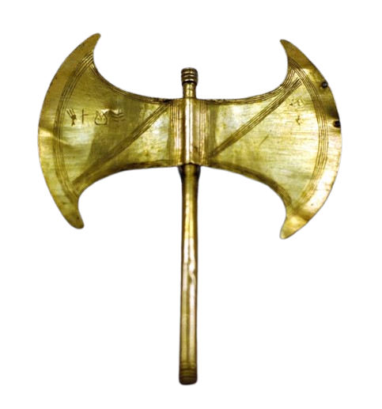
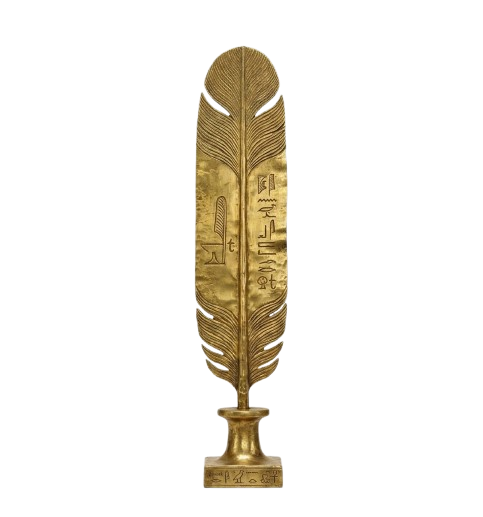

Escolha sua Etapa
A jornada do herói em três etapas

Teseu
O Herói e suas Provas. Foco na superação e no reconhecimento de problemas como provas internas. Transformação de si.

Maat
Equilíbrio e Justiça. Desenvolvimento da percepção ampla da humanidade e do serviço ao mundo.
Prometeu
O Portador da Luz. Ação transformadora no mundo e contribuição para a evolução da humanidade.